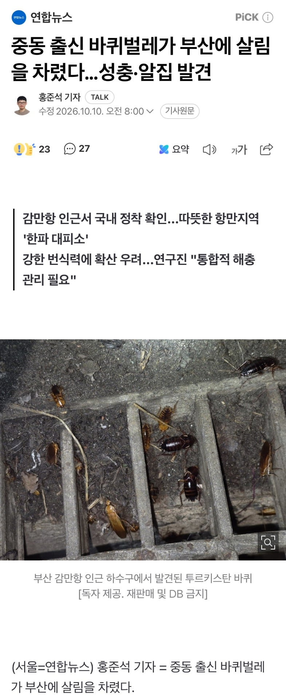

https://n.news.naver.com/article/001/0016368053?cds=news_edit
투르키스탄 바퀴는 검붉은색을 띠며 몸길이가 3㎝ 정도다.
투르키스탄 바퀴는 원산지가 중동과 중앙아시아인데, 부산은 평년(1991∼2020년) 겨울 평균기온이 3.6∼5.8도로 상대적으로 높아 외래종이 정착하기에 유리하다.
...
투르키스탄 바퀴는 220일 정도면 성충이 될 정도로 빠르게 성장하고 암컷 한 마리가 약충 350마리를 낳을 정도로 번식력이 강해 파충류와 절지류 먹이용으로 반입되는 경우가 많다.
이 때문에 감만항은 투르키스탄 바퀴에게 '전초기지'가 될 수 있으며, 이미 감만항 외부 공원에서 발견된 개체가 있는 만큼 어디까지 확산했을지는 알 수 없는 상황이다.
미국, 일본, 러시아, 유럽 등은 벌써 투르키스탄 바퀴 유입으로 고초를 치르고 있다.
졸라 세게 생겼네